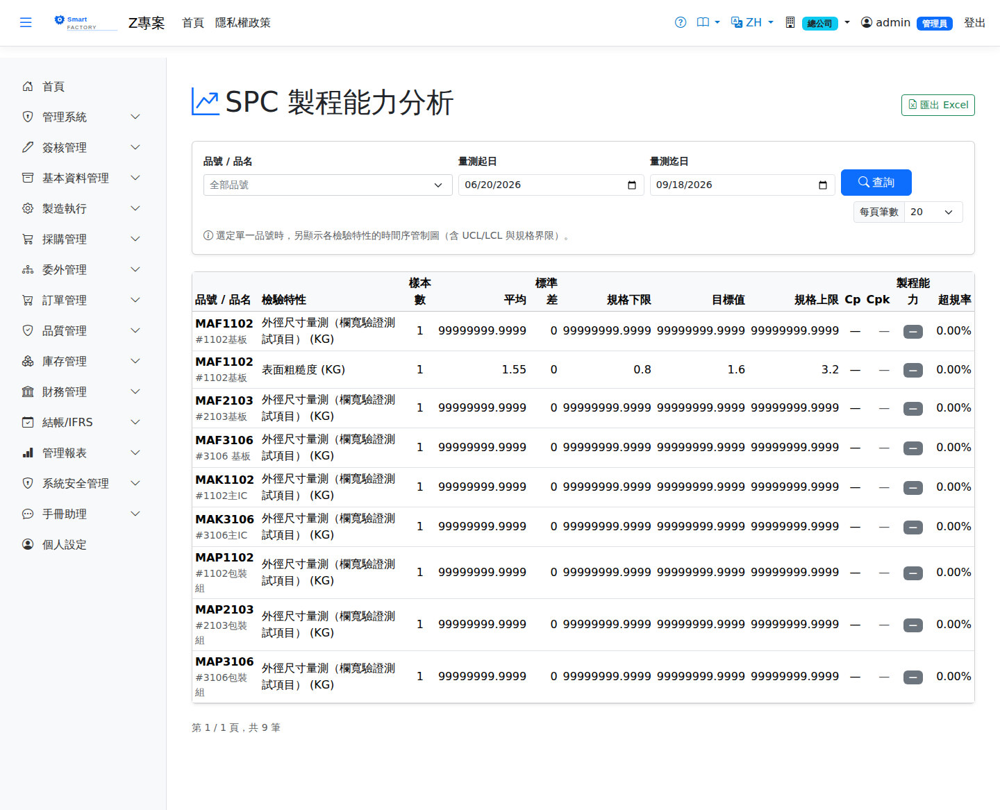

SPC 製程能力分析SPC Process Capability
路由：/SpcAnalysis | Cp/Cpk 製程能力與管制圖Route: /SpcAnalysis | Cp/Cpk process capability and control charts
彙整檢驗單的量測值，計算製程能力指標（Cp、Cpk、σ、UCL/LCL）與超規率，單一品號檢視時附管制圖趨勢，及早發現製程漂移。Gathers the measured values from inspection orders and works out the process capability indices (Cp, Cpk, σ, UCL/LCL) and the out-of-spec rate; viewing a single item adds a control chart trend, so drift is spotted early.

SPC 製程能力分析畫面截圖（示意，實際欄位/資料依權限與查詢條件而異）SPC process capability screenshot (illustrative; actual fields and data vary by permission and query criteria)
查詢Search
1
查詢列輸入條件後點「查詢」；欄位標題可點擊排序，清單下方有分頁導航。Enter your criteria on the query bar and click "Search"; column headers can be clicked to sort, and the paging controls sit below the list.
2
選擇品號與檢驗項目、期間後產生分析；Cpk < 1.33 建議列入改善。Choose the item, the inspection item and the period to produce the analysis; Cpk < 1.33 should be flagged for improvement.
欄位說明Field reference
查詢條件Query criteria
| 條件Condition | 說明Guide |
|---|---|
| 品號 / 品名Product | 關鍵字模糊比對Keyword (partial match) |
| 量測起日 / 量測迄日Measured from / to | 納入統計的量測資料期間；樣本需足夠才具統計意義Period of measurement data included; the sample has to be big enough to be statistically meaningful |
報表欄位Report fields
| 欄位Field | 說明Guide |
|---|---|
| 品號 / 品名Product | 受分析的料件Item being analysed |
| 檢驗特性Characteristic | 被量測的品質特性，對應檢驗規範的量測項目The quality characteristic being measured, matching the measurement item in the inspection spec |
| 樣本數Sample size | 納入計算的量測筆數；樣本過少時 Cp／Cpk 參考性低Number of measurements in the calculation; with too few, Cp and Cpk mean little |
| 平均 / 標準差Mean / Standard deviation | 量測值的集中趨勢與離散程度The central tendency and the spread of the measured values |
| 規格下限 / 目標值 / 規格上限LSL / Target / USL | 取自檢驗規範的 LSL／Target／USLLSL, target and USL taken from the inspection spec |
| Cp | 製程精密度＝(USL － LSL) ÷ (6σ)，只看離散程度、不管有沒有偏移Process precision = (USL − LSL) ÷ 6σ; it looks only at spread and ignores any shift off centre |
| Cpk | 製程能力指數，同時考慮離散與中心偏移；Cpk 明顯低於 Cp 表示製程中心偏離目標值The process capability index, which allows for both spread and centring; a Cpk well below Cp means the process is off target |
| 製程能力Capability | 依 Cpk 級距給出的判讀（如足夠／需改善／不足）An interpretation based on the Cpk band (adequate / needs improvement / inadequate) |
| 超規率OOS % | 量測值落在規格界限外的比率，是實際不良風險的直接指標Proportion of measurements outside the specification limits, a direct measure of the real risk of defects |